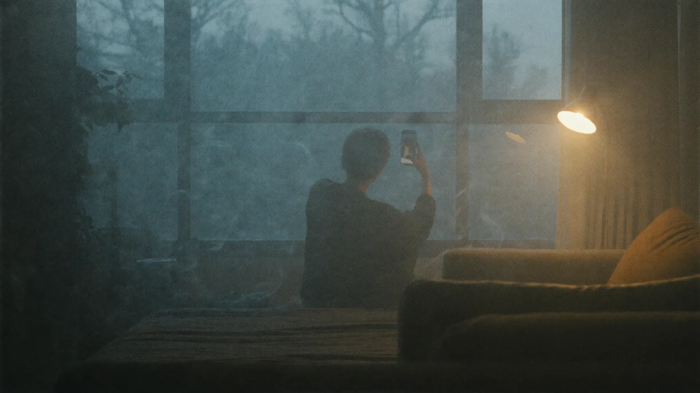

Why 마음터
정신과 상담이 어려운 진짜 이유를 풀었습니다
낙인, 기록, 짧은 상담, 그리고 개인정보. 사람들이 정신과 문턱에서 돌아서는 이유를 하나씩 기능으로 해결했습니다.
🗣️
기록이 남을까 봐 (F코드 공포)
약 없이 대화만 원하면 상담 중심(Z코드)을 선택하세요. 정신질환 진단명(F코드)이 기록되지 않아, 보험 가입 걱정 없이 상담받을 수 있습니다.
⏱️
5분 만에 끝날까 봐
초진 30분, 재진 15분. 상담 성격에 따라 충분한 시간을 확보합니다. 사전 문진으로 병력 청취 시간을 아껴 대화에 집중합니다.
🔒
앱이 내 진료를 볼까 봐
상담 내용은 담당 의사만 봅니다. 관리자도 다른 의사도 열람할 수 없습니다. 이름은 가명으로 처리되어 운영됩니다.
💊
안전한 처방
비대면으로 처방할 수 없는 향정신성 약물은 시스템이 자동으로 차단합니다. 필요한 경우 대면 진료를 안내해 위법 처방을 원천 차단합니다.
🆘
위기 상황 대응
문진에서 자해·자살 위험이 감지되면 예약을 기다리지 않고 즉시 위기 화면으로 전환해 109 상담전화와 응급 안내를 연결합니다.
📅
지속되는 관계
1회성 상담이 아니라 재진으로 이어집니다. 같은 의사에게 편하게 다시 예약하고, 과거 상담 기록을 이어서 봅니다.
App Demo
앱을 직접 눌러보세요
입력 없이 버튼만 눌러 문진 → 의사 선택 → 예약 → 결제 → 상담 → 처방까지 전체 흐름을 체험할 수 있습니다.
화면 인덱스
체험 포인트
- · 문진 마지막 문항에서 위기 응답을 고르면 위기 화면으로 전환됩니다
- · 예약 유형에서 「상담 중심」을 고르면 처방 단계가 사라지고 Z코드로 표시됩니다
- · 결제 금액은 건강보험 수가로 자동 계산됩니다(임의 금액 아님)